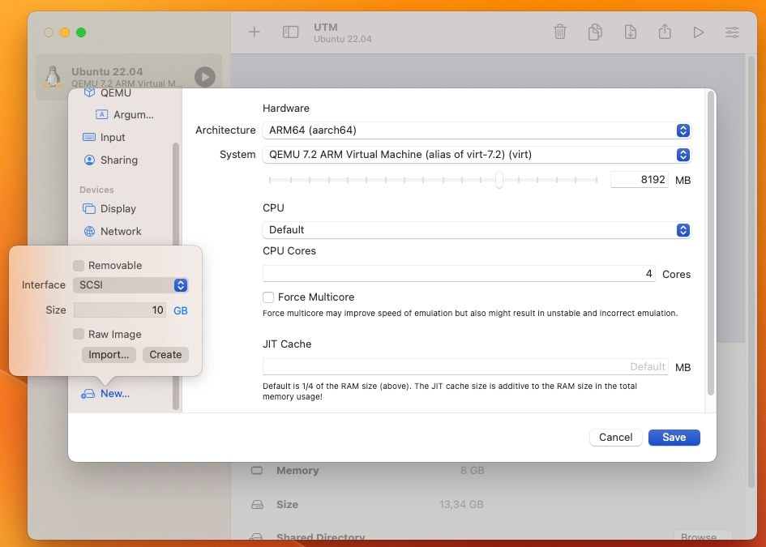

Levyt
Warning
Tämä Tiedostojärjestelmä-osio ei sisällä tehtäväpakettia ja on kehitys/odotustilassa; sitä jatketaan, jos sille tulee tarve jossakin toteutuksessa. Voit kuitenkin tutustua tähän raakileeseen vapaasti.
Tietokoneessa käynnissä olevat ohjelmat eli prosessit ovat ladattuina tietokoneen keskusmuistiin (RAM). Jotta jotakin tietoa voisi säilyttää (eng. persist) pysyvästi, tarvitaan massamuistina toimiva laite, kuten kiintolevy tai SSD-puolijohdelevy. Virtuaalikoneessasi tämä laite on virtuaalinen, mutta löytyy /dev-lokaatiosta tiedostona, kuten muutkin laitteet Linuxissa.
Alla esimerkki macOS:n UTM-virtuaalikoneessa ajetusta Ubuntusta, josta löytyy seuraavat block devicesit (ks. man lsblk).
$ lsblk --exlude 7
NAME MAJ:MIN RM SIZE RO TYPE MOUNTPOINTS
sr0 11:0 1 1024M 0 rom
vda 252:0 0 64G 0 disk
├─vda1 252:1 0 512M 0 part /boot/efi
└─vda2 252:2 0 63,5G 0 part /
Mikäli sinulla on virtuaalikone Windowsissa, laitteena on todennäköisesti sda eikä vda. SDA on hypervisorin emuloima SCSI-asema, kun taas VDA on paravirtualisoitu, jolloin virtuaalikoneen käskyt viedään jotakuinkin läpivientinä hypervisorin läpi sen alla olevaan käyttöjärjestelmään, joka on tässä tapauksessa UNIX-pohjainen macOS.
P.S. Listalla voi näkyä muutakin kuin, kuten Firefoxin host-hunspell.
Laitteet
Mikäli haluat löytää laitteista lisää tietoa, voit tarkistaa esimerkiksi kernel ring bufferin eli kernelin lokiviestit (komento sudo dmesg) tai udevin eli laitehallinnan tietoja. Alla jälkimmäisen output kyseisten laitteiden kohdalta.
# udev
$ udevadm info /dev/sr0
P: /devices/pci0000:00/0000:00:04.0/usb1/1-4/1-4.1/1-4.1:1.0/host0/target0:0:0/0:0:0:0/block/sr0
N: sr0
L: -100
S: cdrom
S: disk/by-id/usb-QEMU_QEMU_CD-ROM_1-0000:00:04.0-4.1-0:0
...
# udev
$ udevadm info /dev/vda
P: /devices/pci0000:00/0000:00:06.0/virtio2/block/vda
N: vda
L: 0
S: disk/by-path/virtio-pci-0000:00:06.0
S: disk/by-path/pci-0000:00:06.0
...
Huomaa, että laitteet ovat tässä tapauksessa vain virtuaalisia. Tiedostojen lokaatio ja muoto riippuu hypervisorista. Tässä tapauksessa hypervisor on UTM, ja tiedosto löytyy lokaatiosta:
SCSI
Mikäli et paravirtualisoi massamuistia virtio:lla kuten yllä, laitteet käsitellään Linuxissa mitä suurimmalla todennäköisyydellä SCSI block device -tyylisinä laitteina. Tämä ei siis tarkoita, että tietokoneessa olisi erikseen SCSI-ohjainkortti, vaan Linux käyttää SCSI-komentoja levyjen kanssa kommunikoimiseen. (S)ATA, ATAPI, USB ja muihin liitäntöihin kiinnitetyt massamuistilaitteet näkyvät täten Linuxissa SCSI-väylään kytkettyinä laitteina.

Kuvio 1: Virtuaalikoneeseen lisätään uusi SCSI-rajapintaa käyttävä levy.
Mikäli virtuaalikoneeseen lisätään kaksi SCSI-rajapintaa käyttävää levyä, ja ajetaan aiemmin tuttu list block devices komento, tulostuu ruudulle alla näkyvä tuloste. Mikäli --exclude:n viittaamaa sekä tulostuneessa taulussa näkymä MAJ eli major numero kiinnostaa, tutki tiedostoa /proc/devices, jossa ne ovat listattuina.
$ lsblk --exclude 7
NAME MAJ:MIN RM SIZE RO TYPE MOUNTPOINTS
sda 8:0 0 10G 0 disk
sdb 8:16 0 10G 0 disk
sr0 11:0 1 1024M 0 rom
vda 252:0 0 64G 0 disk
├─vda1 252:1 0 512M 0 part /boot/efi
└─vda2 252:2 0 63,5G 0 part /
Kuten yllä näkyy, kaksi uutta SCSI-laitetta ovat saaneet nimet sda ja sdb. Linux näkee siis laitteet, mutta niitä ei ole vielä liitetty millään tavalla file hierarchyyn. Tietokoneessa vapaana oleva kiintolevytila ei ole siis vielä käyttöjärjestelmän näkökulmasta lisääntynyt. Tämän voi varmistaa ajamalla df-komennon. Option -h kertoo koot ihmisille sopivissa formaateissa, -e tmpfs sen sijaan piilottaa muistinsisäiset eli vain RAM:ssa sijaitsevat, väliaikaiset levyjärjestelmät.
$ df -h --exclude-type tmpfs
Filesystem Size Used Avail Use% Mounted on
/dev/vda2 63G 13G 47G 22% /
/dev/vda1 512M 5,3M 507M 2% /boot/efi
Jos haluat nähdä kaikki SCSI-laitteesi listamuodossa, tutustu tiedostoon /proc/scsi/scsi tai aja alla näkymä komento:
$ lsscsi
[0:0:0:0] disk QEMU QEMU HARDDISK 2.5+ /dev/sda
[0:0:1:0] disk QEMU QEMU HARDDISK 2.5+ /dev/sdb
[1:0:0:0] cd/dvd QEMU QEMU CD-ROM 2.5+ /dev/sr0
Ensimmäisen sarakkeen selite löytyy /proc/scsi/scsi-tiedostosta, eli [0:0:0:0] on sama kuin Host: scsi0 Channel: 00 Id: 00 Lun: 00.